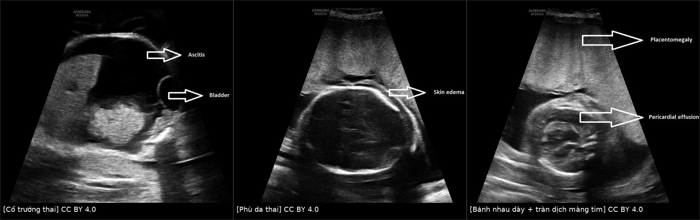
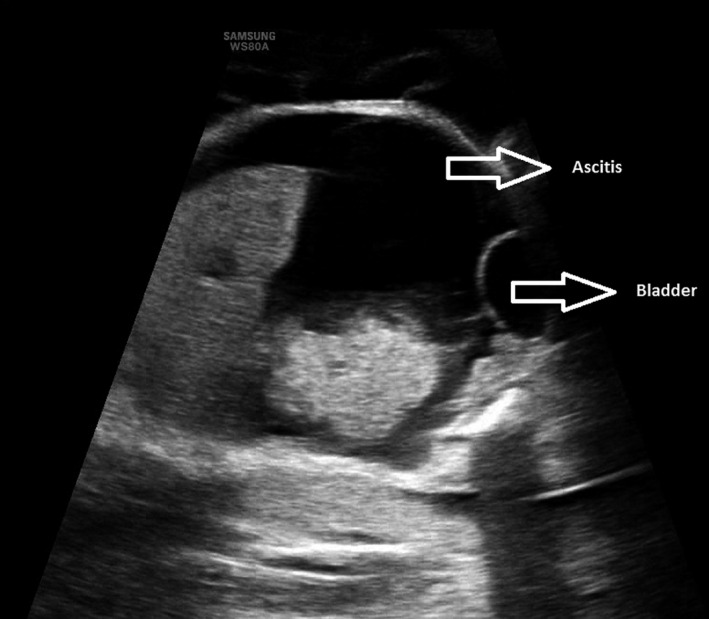
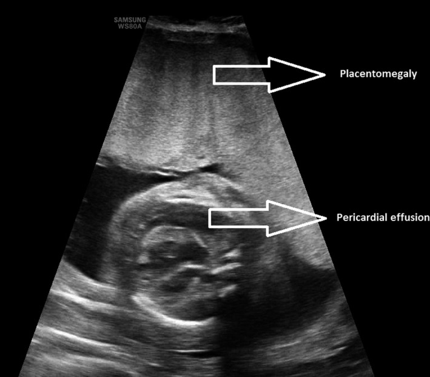
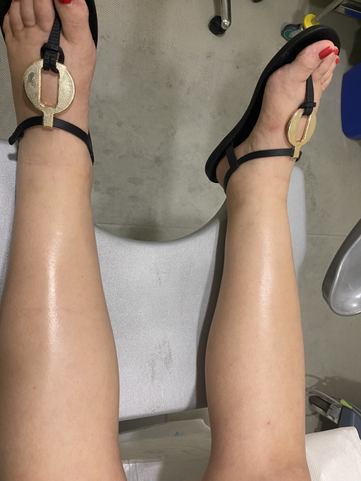

1746 — Hội chứng gương do phù thai: phân biệt tiền sản giật và xử trí mẹ / Mirror syndrome (Ballantyne syndrome)
Tags: pattern:thai-phu pattern:phu-me pattern:banh-nhau-day pattern:da-oi pattern:thieu-mau-thai vung:banh-nhau vung:thai-nhi vung:tu-cung score:sFlt-1-PlGF protocol:SA-thai protocol:Doppler-mau protocol:MRI-thai
Mức chắc chắn (certainty): tổng hợp y văn (literature synthesis) — số liệu từ đoàn hệ 182 ca phù thai (dẫn qua tổng quan PMC13571801), nghiên cứu bệnh–chứng 58.428 ca sinh (PMC8480018), loạt 10 ca/276 thai phù (PMC9574449) và ca nguyên văn dùng cho hình (PMC8850394). Không có RCT; khuyến cáo là tổng hợp ca – đoàn hệ.
1. Tổng quan bệnh học – cơ chế hình ảnh
- Định nghĩa: hội chứng gương (mirror syndrome, Ballantyne syndrome, "triple edema") là phù thai + phù bánh nhau + phù mẹ cùng lúc. Phù thai định nghĩa là dịch ở ≥ 2 khoang (phù da > 5 mm, cổ trướng, tràn dịch màng phổi, tràn dịch màng tim) (PMC8480018). Bánh nhau dày khi > 40 mm ở tuổi thai ≤ 20 tuần và > 60 mm khi ≥ 21 tuần (PMC9574449; PMC8480018 dùng ngưỡng 40/60 mm theo tam cá nguyệt 2/3).
- TẠI SAO mẹ "sao chép" thai — bánh nhau là trung tâm: nhung mao bánh nhau phù nề → thiếu oxy lớp nguyên bào nuôi → giải phóng sFlt-1 (sVEGFR-1) và soluble endoglin vào tuần hoàn mẹ → rối loạn chức năng nội mô toàn thân (giống tiền sản giật): tăng tính thấm mao mạch → phù, tăng cân nhanh, tràn dịch, tăng huyết áp, protein niệu, tổn thương thận – gan. Vì vậy mẹ hết phù nhanh sau khi sinh hoặc sau khi phù thai được điều trị — bằng chứng mạnh nhất cho vai trò bánh nhau.
- TẠI SAO có "pha loãng máu" (khác tiền sản giật): thể tích huyết tương mẹ tăng do giữ nước + rò mao mạch, trong khi khối hồng cầu không tăng tương ứng, albumin mất vào khoảng kẽ → Hct giảm, Hb giảm, albumin giảm. Loạt 10 ca: Hct trung vị 20% (17–22%), Hb 89 g/L (75–117), albumin 18 g/L (8–29); 100% có pha loãng máu (PMC9574449). Ngược lại tiền sản giật cô đặc máu (Hct tăng). Đây là chốt phân biệt rẻ nhất trên công thức máu.
- TẠI SAO acid uric tăng ở cả hai: tăng sản xuất do mô thiếu máu + giảm bài tiết ở thận; 70% ca gương có acid uric > 300 µmol/L, trung vị 452 µmol/L — nên acid uric không phân biệt được, chỉ dùng để đánh giá độ nặng (PMC9574449).
- Bánh nhau to = "hyperplacentation": bánh nhau phù to giải phóng nhiều hCG; trong một đoàn hệ, hCG tăng ở 100% ca gương so với 33% ca chỉ có phù thai, và hCG tăng đồng thời với sFlt-1/PlGF gợi ý gương hơn tiền sản giật (PMC13571801). Một gợi ý mới: sFlt-1/PlGF < 85** nghiêng về gương vì bánh nhau to còn tiết **PlGF**; tiền sản giật thường **> 85 — nhưng đây là dữ liệu ban đầu, chưa phải tiêu chuẩn.
- Con số phải nhớ:
- Phù thai gặp 0,02–0,06% thai kỳ; hội chứng gương xảy ra ở 5–30% thai phù (PMC13571801).
- Tần suất chung 0,024% (14/58.428 ca sinh), nhưng 37,8% (14/37) ca phù thai ở tam cá nguyệt 2–3 — nghĩa là khi đã có phù thai, xác suất gương rất cao (PMC8480018).
- Nhóm gương so với phù thai không gương: tăng cân 9,0 vs 5,5 kg, Hb 88 vs 105 g/L, albumin 25,8 vs 35,0 g/L, bánh nhau dày 85,7% vs 34,8% (p < 0,05) (PMC8480018).
- Yếu tố nguy cơ: phù thai khởi phát ≥ 24 tuần (OR 15,83; 95% CI 1,56–160,10) và bánh nhau dày (OR 8,63; 95% CI 1,29–57,72) (PMC8480018).
- Tăng cân nhanh 1.800 g (800–2.500) trong < 1 tuần là dấu hiệu lâm sàng rất gợi ý (PMC9574449).
2. Mẫu hình + chẩn đoán phân biệt theo nguyên nhân phù thai (gamut)
- Mẫu hình chung: thai phụ tăng cân nhanh, phù toàn thân (mặt, cùng đồ, chi), tiểu ít, kèm thai phù trên siêu âm và bánh nhau dày; huyết áp có thể chỉ tăng nhẹ hoặc bình thường.
- Gamut theo nguyên nhân phù thai — vì nguyên nhân quyết định "điều trị được hay phải lấy thai":
- Miễn dịch: bất đồng Rh, anti-Kell, anti-KPa — điều trị được bằng truyền máu trong tử cung (IUT).
- Nhiễm trùng: parvovirus B19 (thiếu máu + suy tim), CMV, coxsackie, giang mai — B19 điều trị được bằng IUT.
- Thiếu máu – huyết sắc tố: alpha-thalassemia thể Bart's — nguyên nhân hàng đầu của cả phù thai và gương trong đoàn hệ Trung Quốc (7/11 ca gương có nguyên nhân rõ) (PMC8480018).
- Tim mạch: HLHS, bệnh cơ tim, loạn nhịp — đoàn hệ 182 ca cho thấy nguyên nhân tim mạch có nguy cơ tiến triển gương cao hơn nguyên nhân không tim mạch (PMC13571801).
- Bánh nhau – đa thai: u máu bánh nhau (chorioangioma), bánh nhau bong, TTTS, TRAP, thai trứng — u máu bánh nhau điều trị được bằng laser/RFA (xem bài 1672).
- Khối u thai: u quái cùng cụt (laser/RFA), CPAM (dẫn lưu/shunt).
- Bất thường nhiễm sắc thể/di truyền: Turner 45,X, trisomy, loạn sản xương, phù bạch mạch bẩm sinh — không điều trị đặc hiệu.
- Không rõ nguyên nhân — vẫn có thể gương; phải loại trừ các nhóm trên trước khi tư vấn.
3. Bảng so sánh phân biệt (ma trận đối chiếu)
| Thực thể (entity) | Hình ảnh / xét nghiệm điển hình | Chốt vào (rule-in) | Chốt loại (rule-out) | Gợi ý xác nhận |
|---|---|---|---|---|
| Hội chứng gương | Phù thai ≥ 2 khoang + bánh nhau > 40 mm (≤ 20 tuần) / > 60 mm (≥ 21 tuần) + mẹ phù; Hct thấp, albumin thấp | Bộ ba phù thai – bánh nhau to – phù mẹ, kèm pha loãng máu (Hct ↓, albumin ↓) | Hct tăng (cô đặc) + phản xạ gân xương tăng → nghiêng tiền sản giật | Siêu âm thai + bánh nhau; CBC, albumin, sFlt-1/PlGF, hCG |
| Tiền sản giật | Thai chậm tăng trưởng, Doppler rốn bất thường, bánh nhau bình thường/giảm; Hct tăng, tiểu cầu giảm | THA + protein niệu xuất hiện sau 20 tuần, tăng phản xạ, tiểu cầu giảm, không phù thai | Có phù thai + bánh nhau dày → không được chỉ gọi là tiền sản giật | Huyết áp, protein/creatinin niệu, tiểu cầu, LDH, AST/ALT |
| Suy tim / bệnh van – cơ tim | Phù + khó thở + tĩnh mạch cổ nổi, tim to, BNP tăng; không phù thai | BNP tăng + siêu âm tim bất thường | Siêu âm tim bình thường + có phù thai → loại | Siêu âm tim, BNP, X-quang ngực |
| Hội chứng thận nhiễm mỡ / bệnh thận | Protein niệu rất cao, albumin rất thấp, phù, có thể thrombosis, không phù thai | Protein niệu > 3,5 g/ngày + albumin < 25 g/L | Có phù thai/bánh nhau dày → nguyên nhân là thai | Protein niệu 24 giờ, albumin, chức năng thận |
| Phù sinh lý thai kỳ / thiếu máu – giảm albumin khác | Phù nhẹ hai chi dưới, tăng cân chậm, thai và bánh nhau bình thường | Phù nhẹ + không tăng cân nhanh + thai bình thường | Tăng cân > 1.800 g/tuần hoặc phù mặt – cùng đồ → không còn sinh lý | Theo dõi cân nặng, siêu âm thai, albumin |
| Bệnh lý huyết khối tĩnh mạch sâu | Phù một bên, đau bắp chân, siêu âm Doppler tĩnh mạch | Phù một bên + Doppler có huyết khối | Phù hai bên đối xứng → loại | Doppler tĩnh mạch chi dưới |

Ba mặt cắt siêu âm cùng một ca: (1) cổ trướng (ascites) cạnh bàng quang thai, (2) phù da dày, (3) bánh nhau dày (placentomegaly) + tràn dịch màng tim. Nguồn: Clinical Case Reports 2022 (PMC8850394), CC BY 4.0. Ảnh ghép letterbox, giữ nguyên tỷ lệ.4. Protocol chụp + xử trí
- Đánh giá mẹ (mỗi lần khám, có thể mỗi 4 giờ khi nặng): huyết áp, cân nặng hằng ngày, lượng nước tiểu – dịch vào, khám phù (mặt, cùng đồ, sacrum), phản xạ gân xương (gương: giảm/bình thường, tiền sản giật: tăng), khó thở/SpO₂.
- Xét nghiệm mẹ: CBC (Hct, Hb, tiểu cầu), albumin, acid uric, creatinin, LDH, AST/ALT, đông máu, protein/creatinin niệu, nhóm máu – kháng thể, sFlt-1/PlGF (nếu có), β-hCG.
- Siêu âm thai (bắt buộc): xác định ≥ 2 khoang dịch, đo độ dày bánh nhau theo tuổi thai, AFI, MCA-PSV (thiếu máu: > 1,5 MoM), ống tĩnh mạch (ductus venosus), siêu âm tim thai nếu nghi tim; tìm nguyên nhân (u máu bánh nhau, u quái cùng cụt, CPAM, đa thai).
- Chẩn đoán nguyên nhân: kháng thể bất đồng, parvovirus B19 PCR, karyotype/microarray, điện di huyết sắc tố (alpha-thal), TORCH theo bối cảnh.
- Nguyên tắc xử trí: điều trị được nguyên nhân thì điều trị thai — IUT (bất đồng miễn dịch/B19), laser/RFA (u máu bánh nhau, u quái cùng cụt), shunt màng phổi – màng ối (tràn dịch màng phổi chèn ép). Trong đoàn hệ, điều trị trong tử cung làm hết phù thai ở 85% và cải thiện mẹ; kéo dài thai > 1/3 ca, trung bình 42 ngày (PMC13571801).
- Lấy thai khi: phù phổi cấp/giảm oxy máu, THA không kiểm soát, suy thận tiến triển, HELLP/DIC, suy tim, hoặc thai không còn khả năng điều trị — bất kể tuổi thai. Nếu mẹ ổn và có nguyên nhân điều trị được → ưu tiên điều trị thai để kéo dài.
- Flowchart:
flowchart TD
A[Phù thai trên siêu âm] --> B[Đo bánh nhau + tìm ≥2 khoang dịch + MCA-PSV]
B --> C{Mẹ phù hoặc tăng cân nhanh?}
C -->|Không| D[Theo dõi thai + tìm nguyên nhân phù thai]
C -->|Có| E[CBC, albumin, acid uric, creatinin, protein niệu, sFlt-1/PlGF]
E --> F{Hct thấp + albumin thấp + bánh nhau dày?}
F -->|Có| G[Hội chứng gương]
F -->|Không| H[Cân nhắc tiền sản giật hoặc nguyên nhân khác]
G --> I{Có nguyên nhân điều trị được?}
I -->|Có| J[IUT hoặc laser hoặc shunt + theo dõi mẹ sát]
I -->|Không| K[Lấy thai theo tình trạng mẹ]
J --> L[Theo dõi phù phổi, THA, creatinin, tiểu cầu]
K --> L
- Sau sinh: theo dõi băng huyết (45%), nhập ICU (tới 50%), phù phổi, suy tim, DIC; phù và xét nghiệm mẹ thường cải thiện trung vị 2–13,5 ngày (PMC13571801). Tư vấn tiên lượng thai rất xấu: thai lưu 41% trong 107 thai (Allarakia), sống 7,7% (Biswas); loạt 10 ca có thai lưu 66,7%, tử vong sơ sinh 25%, sống 8,3% (PMC9574449).
5. Biến thể bình thường và cạm bẫy
- Gọi nhầm là tiền sản giật: gương có thể không có protein niệu (chỉ 50%), không tăng phản xạ, và tiểu cầu có thể bình thường. Nếu chỉ dùng tiêu chuẩn tiền sản giật, ca gương bị bỏ sót và điều trị sai hướng (MgSO₄, hạn chế dịch) trong khi vấn đề là quá tải tuần hoàn.
- Pha loãng ≠ thiếu sắt: Hb 89 g/L trong gương là pha loãng máu, truyền sắt/truyền máu không giải quyết; phải đánh giá Hct và albumin cùng lúc.
- Bánh nhau dày theo tuổi thai: ngưỡng 40 mm trước 20 tuần, 60 mm sau 21 tuần — dùng một ngưỡng duy nhất sẽ bỏ sót hoặc gọi nhầm.
- Gương có thể xuất hiện SAU khi điều trị thai thành công: đã có ca khởi phát tới 7 ngày sau khi điều trị tràn dịch màng phổi thai, và ≈ 66% ca được chẩn đoán chỉ sau khi điều trị thai (PMC13571801) → không được ngừng theo dõi mẹ vì "thai đã ổn".
- sFlt-1/PlGF không phải chốt tuyệt đối: < 85 nghiêng gương, nhưng có chồng lấp; không dùng một mình để quyết định lấy thai.
- Phù sinh lý thai kỳ: phù nhẹ hai chi dưới, tăng cân chậm, thai và bánh nhau bình thường — đừng chẩn đoán gương khi thiếu phù thai.
- Thai phù không rõ nguyên nhân vẫn có thể gương: trong loạt 10 ca, 50% do bất thường cấu trúc (u quái cùng cụt, CPAM, HLHS, cystic hygroma), 50% do miễn dịch/nhiễm/đa thai/thai trứng — không có nguyên nhân "vô căn" nào được phép dừng lại khi mẹ đã có dấu hiệu.
6. Tự lượng giá — Blind Quiz
Ca 1 — Thai 29 tuần, siêu âm bụng thai:

- Gợi ý lâm sàng: mẹ tăng 2 kg trong 5 ngày, phù mặt và hai chân.
- Câu hỏi: Dịch nằm ở khoang nào? Đây có phải phù thai đơn thuần? Cần đo gì ở bánh nhau?
Bấm để hiện đáp án (findings + chẩn đoán)
- Dấu hiệu: cổ trướng (ascites) rõ, cạnh bàng quang thai; phù da đi kèm (ảnh sau).
- Chẩn đoán: phù thai — cần ≥ 2 khoang để gọi phù thai; kèm phù mẹ và bánh nhau dày là hội chứng gương.
- Việc phải làm: đo độ dày bánh nhau (ngưỡng > 60 mm ở 29 tuần), MCA-PSV (thiếu máu nếu > 1,5 MoM), AFI, siêu âm tim thai; xét nghiệm mẹ Hct, albumin, acid uric, protein niệu.
- Nguồn: Clinical Case Reports 2022 (PMC8850394), Fig. 1. CC BY 4.0.
Ca 2 — Cùng ca, mặt cắt bánh nhau và tim thai:

- Câu hỏi: Hai dấu hiệu trong ảnh? Dấu hiệu nào quyết định "hyperplacentation"? Vì sao bánh nhau to lại gây phù mẹ?
Bấm để hiện đáp án
- Dấu hiệu: bánh nhau dày (placentomegaly) và tràn dịch màng tim (pericardial effusion).
- Bánh nhau dày là chốt của hyperplacentation — nhung mao phù tiết sFlt-1/endoglin và hCG vào tuần hoàn mẹ → rối loạn nội mô → phù, tăng huyết áp, pha loãng máu.
- Vì sao quan trọng: bánh nhau dày là yếu tố nguy cơ độc lập của gương (OR 8,63), và là dấu hiệu điều trị được nếu nguyên nhân là u máu bánh nhau.
- Nguồn: Clinical Case Reports 2022 (PMC8850394), Fig. 3. CC BY 4.0.
Ca 3 — Mẹ của thai nhi trên, khám lâm sàng:

- Câu hỏi: Mô tả dấu hiệu? Phân biệt với tiền sản giật bằng 3 xét nghiệm nào? Khi nào phải lấy thai?
Bấm để hiện đáp án
- Dấu hiệu: phù hai chi dưới, da căng bóng (pitting edema), đối xứng — phù toàn thân của hội chứng gương.
- Ba xét nghiệm phân biệt: Hct (giảm = pha loãng, gương), albumin (giảm mạnh), tiểu cầu/phản xạ (tiền sản giật: tiểu cầu giảm, phản xạ tăng); thêm sFlt-1/PlGF (< 85 nghiêng gương).
- Lấy thai khi: phù phổi, giảm oxy, THA không kiểm soát, suy thận, HELLP/DIC, suy tim; nếu mẹ ổn và có nguyên nhân điều trị được → điều trị thai trước (85% hết phù thai, kéo dài trung bình 42 ngày).
- Nguồn: Clinical Case Reports 2022 (PMC8850394), Fig. 4. CC BY 4.0.
Bài liên quan chéo
- 1672 – U máu bánh nhau lớn
- 1673 – Truyền máu trong tử cung
- 698 – Nang phổi bẩm sinh CPAM/CCAM
- 680 – U quái cùng cụt ở trẻ
- 1744 – Bí tiểu cấp ở bé gái
- 500 – Tổng quan Vú & Sản phụ khoa
Ảnh
images/1746_hoi-chung-guong_US-thai-PMC8850394-F1.jpg— cổ trướng thai, CC BY 4.0.images/1746_hoi-chung-guong_US-thai-PMC8850394-F2.jpg— phù da thai, CC BY 4.0.images/1746_hoi-chung-guong_US-thai-PMC8850394-F3.jpg— bánh nhau dày + tràn dịch màng tim, CC BY 4.0.images/1746_hoi-chung-guong_me-PMC8850394-F4.jpg— phù chi dưới của mẹ, CC BY 4.0.images/composite_1746_phanh-thai.jpg— ảnh ghép 3 mặt cắt thai, CC BY 4.0.- Nguồn + giấy phép từng ảnh:
images/CREDITS.md.
Không dùng để chẩn đoán độc lập khi chưa có người hướng dẫn.